Provisioning a New CLICK PLUS PLC
Users can download the latest CLICK PLUS Provisioning App from the Apple or Google play store and then use Bluetooth to connect and provision the PLC.
A new CLICK PLUS C2-02CPU, C2-02CPU-2, C2-03CPU, or C2-03CPU-2 has Bluetooth disabled by default. This allows the user with the CLICK PLUS Provisioning App to change the needed Wi-Fi or network settings after they have been enabled in the project. Once the Wi-Fi is configured to connect to the local network access point, the user can then connect the CLICK Programming software via Wi-Fi to load and edit the project. The Temporary settings used for provisioning are stored in temporary memory and will be overwritten by the project settings when written to the PLC.
The Ethernet RJ45 hardwired port can also be configured during the PLC provisioning if needed.
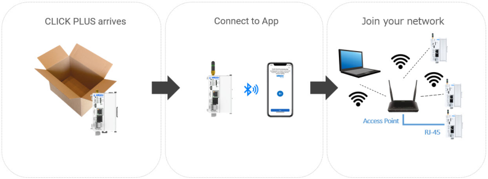
Setup & Provisioning via Bluetooth
The C2-02CPU, orC2-02CPU-2, C2-03CPU, and C2-03CPU-2 can be configured over a Bluetooth, Ethernet or microUSB connection. You will need a Windows® PC or a mobile device (iOS or Android) and an appropriate antenna or cable for the method you choose. Bluetooth and/or WLAN must be enable in CLICK Programming Software first
PREPARE A MOBILE DEVICE FOR CONNECTION
Install the CLICK PLUS Provisioning App from the Apple App Store or Google Play Store (CLICK PLUS Provisioning, published by AutomationDirect).
Finding the New PLC
Note: For iOS and Android users, ensure that Bluetooth is enabled on your phone or mobile device.
Connect to the CPU as follows:
- Connect to CPU through USB or Ethernet and set up project password and transfer to CPU
- Enable Bluetooth through Home -> CPU -> Bluetooth Port Setup
- Open the CLICK PLUS Provisioning App.
- Tap Start in the App.
- Press the pairing button on the CLICK PLUS CPU for 1 second. The BT (Bluetooth) LED will start flashing.
- If the App detects that the PLC is factory new and the network settings have not been configured, it will prompt you to Tap Next to begin the provisioning process.
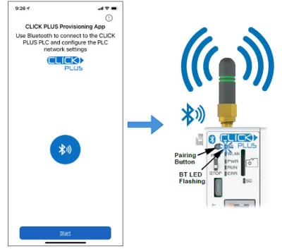
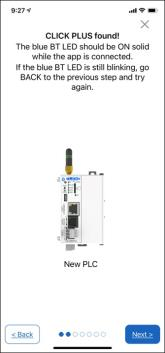
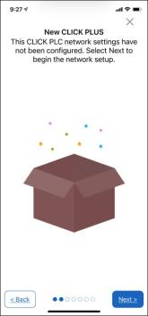
NAME THE CPU
- You will be requested to assign a name to the PLC. This name will be used to identify it on the network when using the programming software connection Ethernet browse tool. It is good practice to choose a unique name if there are other CLICK PLCs on the network. Enter a name for the PLC and tap next.
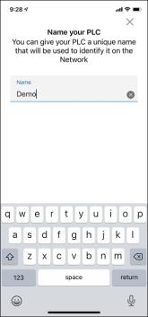
Select the Initial Communication Settings
- You have the option of choosing which network port to provision. This will configure the CLICK PLUS network address settings for the purpose of connecting the programming software. If you choose the Wireless Access option, you will need to ensure that your access point is on and that the CLICK PLUS is within range of the wireless access point.
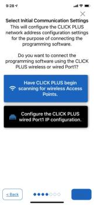
Choosing the Wireless Access Point Option
For this option you will need an active Network Access point available within range of the CLICK PLUS PLC, and know the password to allow the PLC to connect to the Network and you must first enable WLAN in WLAN Port Settings
- The CLICK PLC will scan for any access point within range and then display all access points that are available and then display them for you to choose (you may need to scroll the list to find the desired Access Point). Select an Access Point and type in the correct password that the PLC will need to connect. If the incorrect password is entered, you will be prompted to correct it after the CLICK PLUS fails to connect.
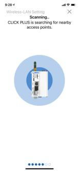
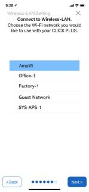
- Once the PLC has successfully connected to the Network access point, you will have the option of choosing which IP address configuration to use. You will need to make sure that the PLC is within range of the wireless access point.
- Use DHCP: Choose this option if you know that the Network Access Point is configured to automatically assign a proper network IP address to the CLICK PLUS PLC. This is often the simplest way to connect when a valid IP address is not known. Tap Next to continue.
- Use Default Fixed Address: The CLICK PLUS wireless LAN default IP address is 192.168.0.11. This can be selected if it is a valid IP address for your wireless network. Tap Next to continue.
- Use the following IP address: Choose this option if you need to input a valid IP address for your network. Tap Next to continue.
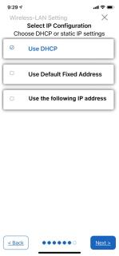
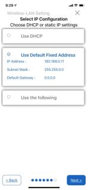
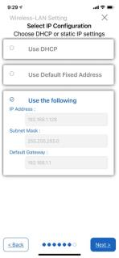
- The CLICK PLUS will connect to the access point and exchange configuration information. If the settings are correct, The App will show the Completion screen and the network settings of the CLICK PLUS can be viewed. The CLICK PLUS WLAN LED will also be ON. The PLC is now connected to the network and accessible to PC's running the CLICK Programming software and connected to the same network.
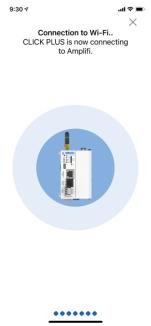
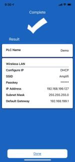
Choosing the Wired Port1 Option
Choose this option when connecting to Port1 RJ45 Ethernet port. Tap Next to continue.
- Use DHCP: Choose this option when connecting though a Network router and you know the router is configured to automatically assign a proper network IP address to the CLICK PLC. This is often the simplest way to connect when a valid IP address is not known. Tap Next to continue.
- Use Default Fixed Address: The CLICK PLUS Port1 default IP address is 192.168.0.10. This can be selected if it is a valid IP address for your network. Tap Next to continue.
- Use the following IP address: Choose this option if you need to input a valid IP address for your network. Tap Next to continue.
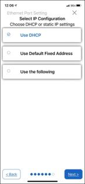
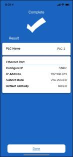